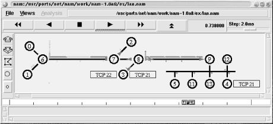

9.2. Network Emulators and Simulators
Basically,
an emulator is a device that sits on a network and mimics the
behavior of network devices or the behavior of part of a system,
e.g., subnets. Actual traffic measurements are made on a network
whose behavior is controlled, in part, by the emulator. Simulators
are software systems that model with software the behavior of the
system or networks. A simulator is a totally artificial or synthetic
environment.
At best, network emulators and simulators are very unlikely
troubleshooting tools. But for the extremely ambitious (or
desperate), it is possible to investigate the behavior of a network
using these tools. Neither of these approaches is for the
fainthearted or novice. Generally an expensive and complex
proposition, there are two projects that are making these approaches
more accessible. If you are really interested in making the
investment in time and effort needed to use emulators or simulators,
read on.
There is a continuum of approaches to investigating the behavior of a
network, ranging from direct measurement at one extreme through
emulation to simulation at the opposite extreme. It's not
unusual for emulators to provide limited simulation features or for
simulators to have emulation features. This is certainly true for the
two tools briefly described here.
We have already
discussed measurement techniques. But while real measurements have an
unquestionable authenticity, a number of problems are associated with
real measurements. Lack of reproducibility is one problem. Scale
problems, such as the cost of increasing the size of the test
network, are another concern. If you are considering implementation
issues, then direct measurement can only be done late in the
development cycle, compounding the cost of mistakes. Emulation and
simulation offer lower-cost alternatives.
Simulators
have the advantages of being relatively cheap, providing highly
reproducible results, scaling very well and inexpensively, and giving
results quickly. It is generally very straightforward to customize
the degree of detail in reports so you can focus on just what is of
interest. Simulations vary in degree of abstraction. The greater the
degree of abstraction, the easier it is to focus on what is of
interest at the cost of lost realism. However, if a simulation is
poorly designed, the results can have little basis in reality. Also,
some simulators may be implemented primarily for one type of use and
may not be appropriate for other uses. From a troubleshooting
perspective, you might use a simulator to further investigate a
hypothesis. Simulators would provide a way to closely examine
behavior to confirm or refute the hypothesis without creating
problems on a production network.
Emulators
lie between simulators and live systems. They allow controlled
experiments with a high degree of reproducibility. They make it much
easier to create the type of traffic or events of interest. They also
provide a mechanism to test real systems effectively. For example, an
emulator might duplicate or approximate the behavior of an attached
device or network. A router emulator might drop traffic or inject
traffic into the actual test network. On the downside, some emulators
tend to be very specialized and are usually platform specific. For
troubleshooting, an emulator could be used to stress a network.
9.2.1. NISTNet
NIST
Network Emulation Tool (
NISTNet) is a general
purpose tool that can be used to emulate the dynamics in an IP
network. It was developed by the National Institute of Standards and
Technology (NIST) and is implemented as an extension to the Linux
operating system through a kernel module. Unlike many emulators,
NISTNet supports a fairly heterogeneous approach
to emulation. And since it will run on a fairly standard platform, it
is remarkably inexpensive to set up and use.
NISTNet
allows you to use a Linux system configured as a router, through an X
Window interface, to model or emulate a number of different
scenarios. For example, you can program both fixed and variable
packet delays and random reordering of packets. Packets can be
dropped either randomly (uniform distribution) or based on
congestion.
[37] Random duplication
of packets, bandwidth limitations, or asymmetric bandwidth can all be
programmed into
NISTNet. You can also program in
jitter and do basic quality-of-service measurements.
NISTNet can be driven by traces from
measurements from existing networks. User-defined packet handlers can
be added to the system to add timestamps, do data collection,
generate responses for emulated clients, and so forth.
9.2.2. ns and nam
If you want to consider simulations, you
should first look into a pair of programs,
ns
and
nam.
ns is a network
simulator, while
nam is a network visualization
tool. Both are under development by the Virtual InterNetwork Testbed
(VINT) project, a DARPA-funded research project whose goal is to
produce a simulator for studying scale and protocol interactions.
VINT is a collaborative project that involves USC, Xerox PARC, LBNL,
and UCB.
ns is derived from earlier
simulation projects such as REAL and has gone through a couple of
incarnations. The kernel is written in C++, while user scripts are
written in MIT's Object Tool Command Language (OTCL), an
object-oriented version of
Tcl. With any
simulation software, you should expect a steep learning curve, and
ns is no exception. You'll need to learn
how to use the product, and you will also need a broad knowledge of
simulations in general. To use
ns, you'll
need to learn how to write scripts in OTCL.
Fortunately, the
ns project provides a wealth of
documentation. The Unix manpage is more than 30 pages and displays
the typical unreadable terseness associated with Unix manual
pages -- great for looking up something you already know (arguably
the intended use) but abysmal for learning something new. There is
also a downloadable manual that runs more than 300 pages. However,
the best place to start is with Marc Greis's tutorial. It is a
more manageable 50 pages and introduces the scripting language in a
series of readable examples.
One problem with simulations
is that they can produce an overwhelming amount of information. Even
worse, simulation results describe dynamic events that are difficult
to interpret when viewed statically.
nam is a
visualization tool that animates network simulations. It is hard to
convey the real flavor of
nam from a single
black-and-white snapshot, but
Figure 9-1 should
give you some idea of its value.

Figure 9-1. nam example
This is output from one of the sample scripts that comes with the
program. The basic topology of the network should be obvious. Packets
are drawn as colored rectangles. Different colors are used for
different sources. As the animation is played, you see the packets
generated, queued at devices, move across the network, and
occasionally, dropped from the network. Node 6 in the figure shows a
stack of packets that have been queued and one packet below the node
that has been dropped. (Dropped packets fall to the bottom of the
screen.) The control buttons at the top are used just as you would
expect -- to play, stop, or rewind the animation.
NISTNet,
ns, and
nam are all described as ongoing projects. But
all three are more polished than many completed projects.
 |  |  |
| 9. Testing Connectivity Protocols |  | 9.3. Microsoft Windows |